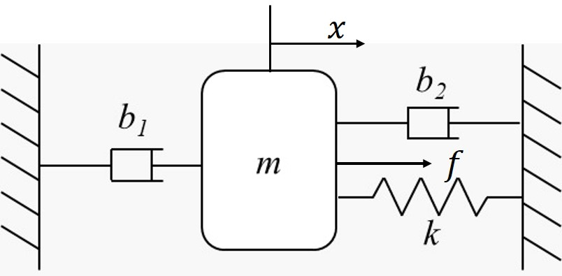

Advanced Matlab/Octave Tutorial -- Lab Report
Lab Report
Individual Report Due date: Sunday, 2 April 2022, 23:59 Include: Code, figures, and anything you think it is important :)Question 1 (20 Pts.)
Given the following dynamic system ${m}\ddot{x}+2\dot{x}+10x=5u$, for $m=4$ and $u$ as the input, with initial conditions $x(0)=0$ and $\dot x(0)=0$. Manually calculate the transfer function and represent it in Matlab/Ocatve. Calculate the Laplace transformation's partial fraction decomposition (i.e. [r, p, k]) by Matlab/Octave and write down the complete form (i.e. the function) in your lab report.Question 2 (20 Pts.)
Compute the total transfer function $Y/U$ of the following system, compute the poles, draw the pole-zero map and the root locus using Matlab/Octave.

Question 3 (20 Pts.)
Given the following transfer function, calculate the unit step response, impulse response, and the time response with a square wave input of period 5s with amplitude 1; $$G(s)=\frac{8(s + 2)}{(s + 3.3)(2s + 7)}$$ Hint: the syntax of generating square wave in Matlab is
f = square(T);
t = 0:0.001:10;
f = square(2*pi*t);
plot(t,f);
Question 4 (20 Pts.)
Consider the following mass-damper-spring system,

Question 5 (20 Pts.)
Consider a system with the following dynamics $$ \ddot{x}+5\dot x=5u $$ Suppose we have the initial conditions $x(0)=0$ and $\dot x(0)=0$. Please design a controller $u = K_p e$, for $e = r - x$, to drive the system to track a step input $r = - 2$.*Requirement: You should attach the code of the simulation and the response of the system in your report.